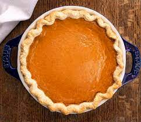

Irish Pie

Traditional Irish pie
This Irish apple pie recipe is from my mum. She was from Cork in southern Ireland, so I'm guessing the recipe is Irish and possibly the same one her mother taught her. As a little boy, I grew up helping my mum make apple and fruit pies. Sadly, she is no longer with us, but her legendary apple pie lives on in my memory. I promise you will love this pie. Serve warm with whipped cream or vanilla ice cream.
Ingredients
Crust
- 1.5 cup all-purpose flour
- 0.75 cup cake flour
- 1 tablespoon white sugar
- 1 cup cold unsalted butter, cubed
- 3 tablespoons shortening
- 0.25 cup sourcream
- 0.125 teaspoon lemon juice
Filling:
- 5 large Granny Smity apples
- 0.5 cup white sugar
- 2 tablespoons all-purpose flour
- 0.5 tablespoon ground nutmeg
- 0.125 teaspon lemon juice
- 1 large egg, beaten
Steps
- Make crust: Combine flours, sugar, and salt in a large bowl. Cut in butter and shortening with 2 knives or a pastry blender until mixture resembles coarse crumbs. Mix in sour cream and lemon juice until dough comes together; some lumps are okay. Divide dough in half and shape into 2 disks. Wrap each in plastic wrap and chill in the refrigerator for 1 hour.
- Preheat the oven to 350 degrees F (175 degrees C). Grease a 9-inch pie dish.
- Roll 1 dough disk out to fit the prepared 9-inch pie dish. Roll out remaining dough disk for top crust; set aside.
- Prepare filling: Place apples into crust in the pie dish. Stir together sugar, flour, and nutmeg in a small bowl; sprinkle over apples. Drizzle with lemon juice.
- Brush outer edge of bottom crust with beaten egg. Cover with top crust; trim and crimp edges together. Brush top with beaten egg and cut 4 steam vents.
- Bake in the preheated oven until golden brown, about 45 minutes. Allow pie to completely cool before serving.